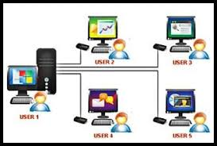

The second topic
Main page
Operating System definition
Operating Systems Classification
Operating system functions
Types of operating systems
Operating Systems Classification
Real-time operating system (RTOS)
Single-user, multi-tasking
Single-user, single task
Multi-user OS

.png "This type of operating system is used to control machinery, scientific instruments, and industrial systems. RTOS usually has very little UI capabilities, and does not include end-user services, because the system will be")